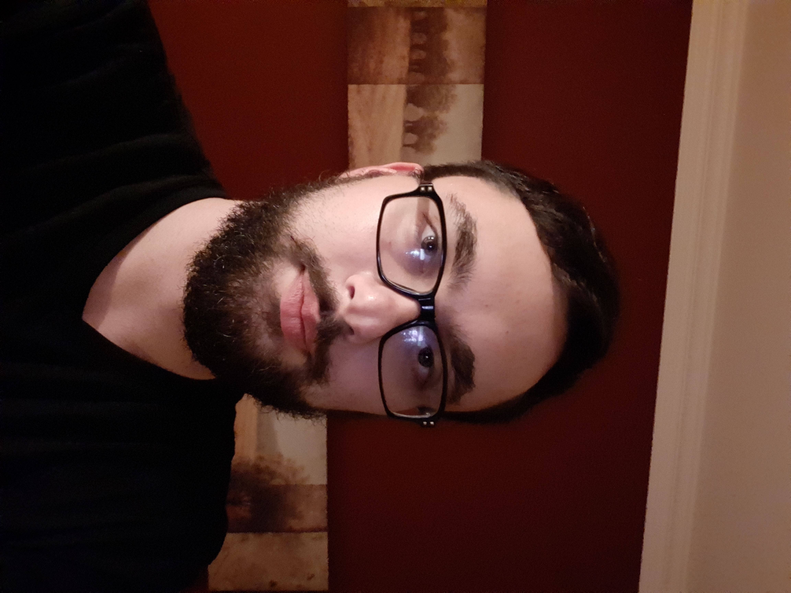
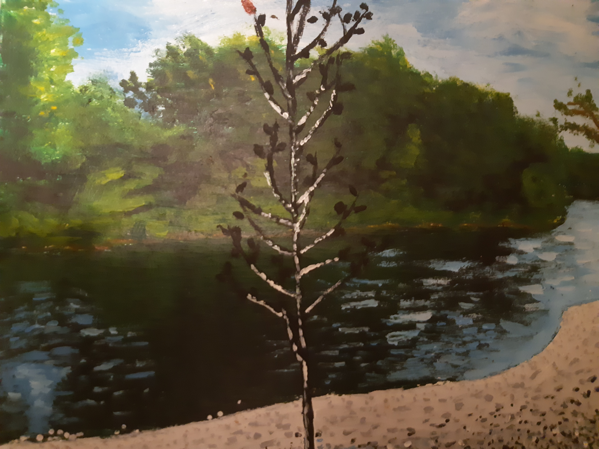

Team Bios Assignment
Matt
Hello, my name is Matthew Decker i'm enrolled in the interactive media design program at fanshawe college. I have always had a love for creating things so when i stumbled apon programs like photoshop and illustrator it was awesome to be able to take my inspirations into those programs and create something awesome. I also have a love for music, There is no other art form that can truley make you feel something like music does.I have messed around with making my own using FL Studios,and have even uploaded some EP's to Soundcloud. This coarse is very exciting, I have always wanted to learn code and learn how to to design websites. I love this field and am looking forward to learning lots from this program.
Nate
Hi, I'm Nathaniel Constable. I decided to take this course because I enjoy the way it teaches a diverse skillset that's focused on one industry. I really enjoy art but have never really had an opportunity to translate that interest into a marketable qualification. In that way the design side of the program has been really fun. Even coding, which I sort of dreaded coming into the program, is turning out to be really interesting. Although it seems overwhelming at first, I have found that at least one student understands any given problem, and you have the answer to a problem someone else has. I get why there's such an emphasis on cooperation and networking.
Art
Like I mentioned, I really enjoy art. It was my favourite subject in highschool so it's really great to be learning the commercial side of it. It's really neat to see what I vaguely remember from landscape painting and sketching being applied to digital mediums.
Photography has always been something I've enjoyed, if it isn't something I'm particularily good at. It's nice to be learning the basics of it now. I'm most facinated with macro photography, which I understand isn't something really touched on, I used to take pictures of flowers or insects etc. It's cool to be learning ways to make that sort of thing easier to do. Auto-focus was with me the day I snapped this. The white background is just the sky. It turned out really nice somehow.